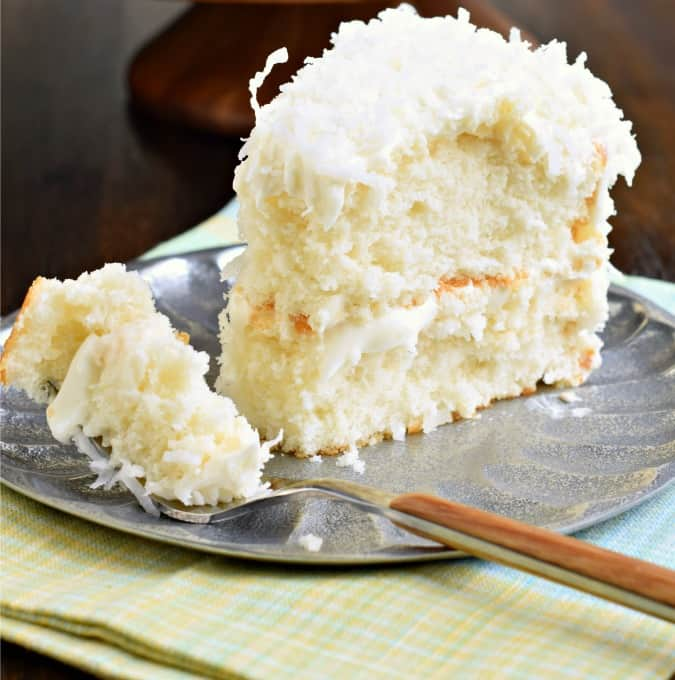

3/4 pound (3 sticks) unsalted butter, at room temperature, plus more for greasing the pans
2 cups sugar
5 extra-large eggs, at room temperature
1 1/2 teaspoons pure vanilla extract
1 1/2 teaspoons pure almond extract
3 cups all-purpose flour, plus more for dusting the pans
1 teaspoon baking powder
1/2 teaspoon baking soda
1/2 teaspoon kosher salt
1 cup milk
4 ounces sweetened shredded coconut
Ingredients
For the frosting:
- 1 pound cream cheese, at room temperature
- 1/2 pound (2 sticks) unsalted butter, at room temperature
- 3/4 teaspoon pure vanilla extract
- 1/4 teaspoon pure almond extract
- 1 pound confectioners' sugar, sifted
- 6 ounces sweetened shredded coconut
Description
This perfect coconut cake sets the bar for homemade cakes everywhere. It’s supremely moist with a soft fluffy crumb and intense coconut flavor. For success, follow this recipe carefully including using cake flour, egg whites, sour cream, and canned coconut milk.
Recipe credits:
Steps
- Preheat the oven to 350 degrees F. Grease 2 (9-inch) round cake pans, then line them parchment paper. Grease them again and dust lightly with flour.
- In the bowl of an electric mixer fitted with a paddle attachment, cream the butter and sugar on medium-high speed for 3 to 5 minutes, until light yellow and fluffy. Crack the eggs into a small bowl. With the mixer on medium speed, add the eggs 1 at a time, scraping down the bowl once during mixing. Add the vanilla and almond extracts and mix well. The mixture might look curdled; don't be concerned.
- In a separate bowl, sift together the flour, baking powder, baking soda and salt. With the mixer on low speed, alternately add the dry ingredients and the milk to the batter in 3 parts, beginning and ending with dry ingredients. Mix until just combined. Fold in the 4 ounces of coconut with a rubber spatula.
- Pour the batter evenly into the 2 pans and smooth the top with a knife. Bake in the center of the oven for 45 to 55 minutes, until the tops are browned and a cake tester comes out clean. Cool on a baking rack for 30 minutes, then turn the cakes out onto a baking rack to finish cooling.
- For the frosting, in the bowl of an electric mixer fitted with a paddle attachment, combine the cream cheese, butter, vanilla and almond extract on low speed. Add the confectioners' sugar and mix until just smooth (don't whip!).
- To assemble, place 1 layer on a flat serving plate, top side down, and spread with frosting. Place the second layer on top, top side up, and frost the top and sides. To decorate the cake, sprinkle the top with coconut and lightly press more coconut onto the sides. Serve at room temperature.